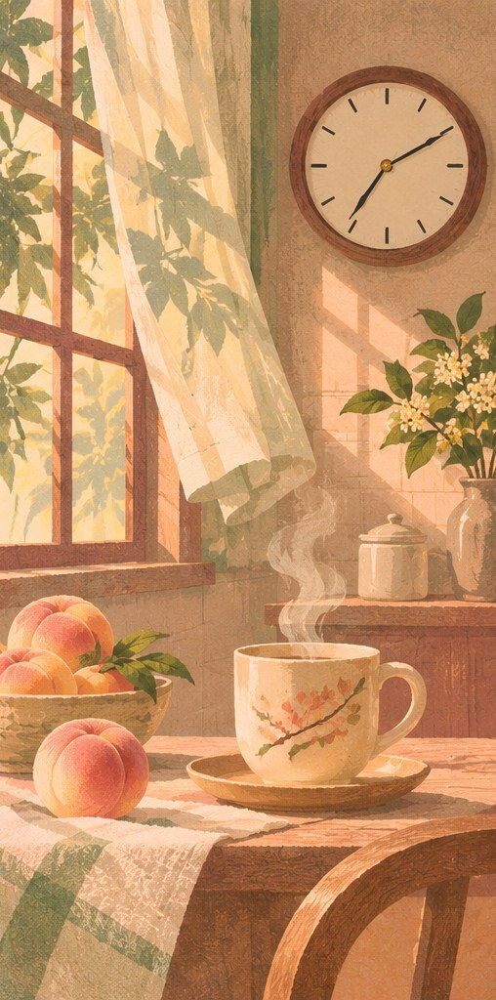
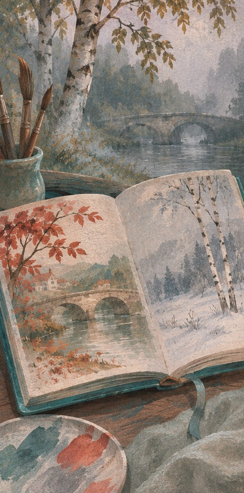
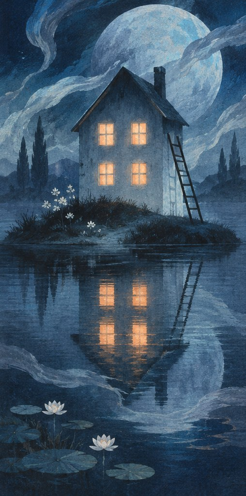
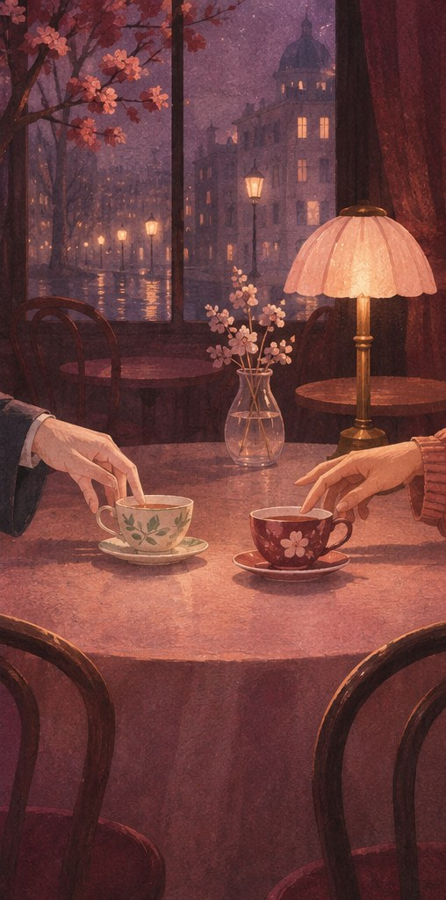
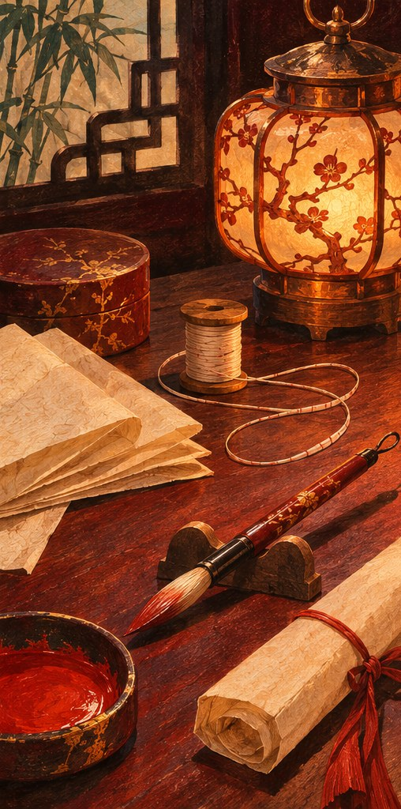

关于自己的
十个小问题。
想怎么过一天，喜欢怎样的相处，诗人和匠人更像谁。挑一题，从熟悉的小事开始答。
-

生活节奏
你适合什么样的生活节奏
把日子放回自己的时区
-

天赋赛道
你的天赋适合什么赛道
从你总被拜托的事情说起
-
历史人物
测测你的灵魂对应哪位中国历史人物
日常小习惯里住着谁
-

南方还是北方
测测你骨子里是南方还是北方人格
只凭体感挑一处落脚地
-
氛围感
你的专属氛围感标签
你一出现，房间像换了光
-

潜意识人格
你的潜意识人格
让第一反应先说一句
-

相处信号
你容易吸引什么样的恋人
你靠近别人时，自带什么信号
-
人生主线
你的人生主线任务
下一章，从一件小事开场
-
城市试住
哪座城市最适合你定居
从一个普通工作日开始挑城市
-

古代天赋
你的古代天赋技能
临时进城，凭本事领一块木牌